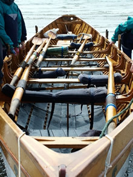
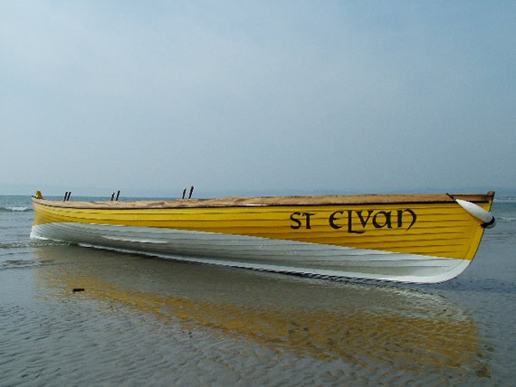

Just Snap It
www.just-snap-it.com
Exhibition Galleries for Cornish Art , Crafts , Photo Art and Everything Photography
Are you an Artist or Crafts person living in Cornwall looking to make an income from your work? Just Snap It Photography will help you improve your photography or Photoshop work But ....
.... just-snap-it.com is not exclusively about photography!
Just Snap It Exhibition Galleries are for other photographers, Artists and Crafts people from Cornwall and the Isles of Scilly to Display their work for sale. See our gallery membership page for information on how to display your work. Just Snap It Galleries are open to membership from artists, crafts people, potters, sculptors, art/craft jewellers and photographers in Cornwall.
With a good mix of the excellent artistic and professional talent in Cornwall we hope to build a Cornwall Arts and Crafts Show-Case for the world to admire and purchase if they so wish, a piece of Cornwall to take away to their part of the world.
Just--Snap-It is owned and run by Photographer Micky Kidd in Penzance. Born and raised in Cheshire and moving to cornwall as a young teenager back to the family roots, Micky has lived most of his life in Cornwall. At the age of sixteen Micky went to sea, where he was encouraged and trained in photography. In his first exhibition in December 2004 he exhibited a full cross section of his individual and definitive style. Alongside his pictures he displayed extra works showing just a few of the range of skills available through his company, at that time being "Riviera Arts" in Causewayhead. He now concentrates on building the Arts and Crafts part of the Just-Snap-It business, property photography portfolios, design graphics and art and stock photography.
There are many images on the website available for stock, prints and prints to canvas.
 Mission:
Mission:
To provide industry leading products, services and support for our clients. To provide a gateway to world markets for Cornwall Arts, Crafts, Photo art etc. Find out what people want to see when looking for specific products and services using innovative web 2.0 services in our research.
Products:
- Arts & Craft Galleries
- Property photography portfolios
- Design and graphics
- Print & advertising design
- Logo Design
- Illustrations and Photo Corrections
- Prints to canvas
- Image prints
- Cards
- Photo books
-
Photographic equipment and accessories
- Photography Tutorials
 |
|
 |
 |
 |
|
 |
|
All photographs © Micky Kidd - Do not use without permission